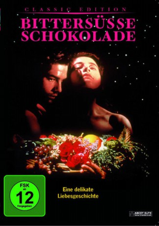

#1433 Bittersüße Schokolade
 
 IMDB-Wertung: 7.2 / 10
IMDB-Wertung: 7.2 / 10  Metascore: 86
Metascore: 86 
Als Teenager verliebt sich die schöne Tita in Pedro. Doch ihre Mutter Elena hat andere Pläne mit ihrer jüngsten Tochter: Tita soll auf Ehemann und Kinder verzichten, um ihrer Mutter zur Seite zu stehen. Um seiner Geliebten dennoch nahe zu sein heiratet Pedro Titas gefügige Schwester Rosaura. Tita findet trotzdem einen Weg, Pedro ihre Liebe zuteil werden zu lassen...
Jahr: 1992
Dauer: 105 Minuten
FSK: 12
Land: Mexiko Studio: Ascot Elite Home EntertainmentTonspuren: DTS - ,
Untertitel:
Auflösung: 720p (1280x688) Größe: 7464 MB
Genre: Drama, Liebe
Regisseur:  Alfonso Arau
Alfonso Arau
Drehbuch: Laura Esquivel, Laura Esquivel
Soundtrack: Leo Brouwer
Darsteller:
 Marco Leonardi als Pedro Muzquiz
Marco Leonardi als Pedro Muzquiz- Lumi Cavazos als Tita
- Yareli Arizmendi als Rosaura
- Joaquín Garrido als Sargento Treviño
- Arcelia Ramírez als Bisnieta
- Gabriela Canudas als Rosaura de adolescente
- Ricardo M. Kaplan als Primer vigilante
- Mario Vasquez als Revolutionary
- Regina Torné als Mamá Elena
- Mario Iván Martínez als Doctor John Brown
- Ada Carrasco als Nacha
- Claudette Maillé als Gertrudis
- Pilar Aranda als Chencha
- Farnesio de Bernal als Cura
- Rodolfo Arias als Juan Alejándrez
- Margarita Isabel als Paquita Lobo
- Sandra Arau als Esperanza Muzquiz
- Andrés García Jr. als Alex Brown
- Regino Herrera als Nicolás
- Genaro Aguirre als Rosalio
- David Ostrosky als Juan de la Garza
- Brígida Alexander als Tía Mary
- Amado Ramírez als Padre de Pedro
- Socorro Rodríguez als Amiga de Paquita
- Rafael García Zuazua als Padrino
- Rafael García Zuazua Jr. als Alex de niño
- Edurne Ballesteros als Tita de adolescente
- Melisa Mares als Rosaura de niña
- Natalia De la Fuente als Gertrudis de niña
- Beatriz Elías als Gertrudis de adolescente
- Rodolfo Mejía als Venerable maestro
- Jaime R. Rodríguez als Maestro masón
- Osvaldo Martínez als Maestro masón
- Javier Mares als Maestro masón
- Miguel Mares als Maestro masón
- Jorge Vizales als Maestro masón
- Orquesta De R. Lombra als Musicians
- Artemio Cruz als Juan Alejandrez's Assistant
- Simon als Pulque
- Chester als Tequila
- Melisa Nickliff als Guest at John Brown's House
- Mary Beth Awyer als Guest at John Brown's House
- David McKinney als Guest at John Brown's House
- Ryan Manti als Guest at John Brown's House
- Bo Hatch als Guest at John Brown's House
- Alfredo P. De Tejada als Guest at John Brown's House
- Gabriela P. De Tejada als Guest at John Brown's House
- Stacey Ashabranner als Guest at John Brown's House
- Teresa Ross als Guest at John Brown's House
- Susana Garcia C. als Guest at John Brown's House
Datei: X:\1992\Bittersüße Schokolade (1992, FSK12, 1280x688).mkv seit 05.07.2015
Festplatte: HD 1992-1995
 Es gibt insgesamt 57 Filme in der Gruppe '1992'
Es gibt insgesamt 57 Filme in der Gruppe '1992'